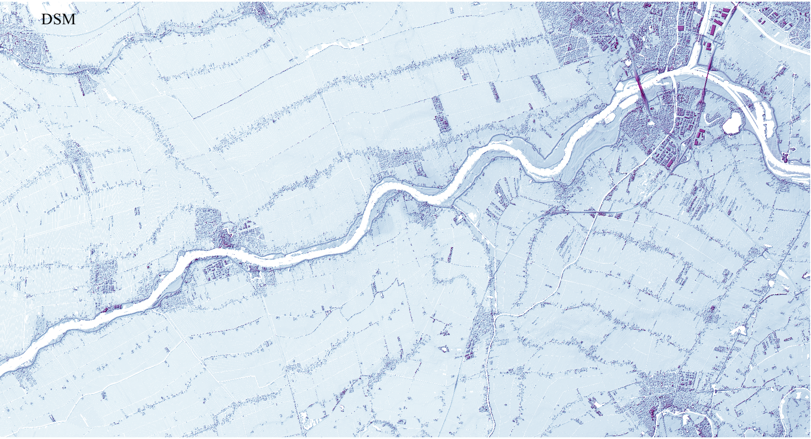
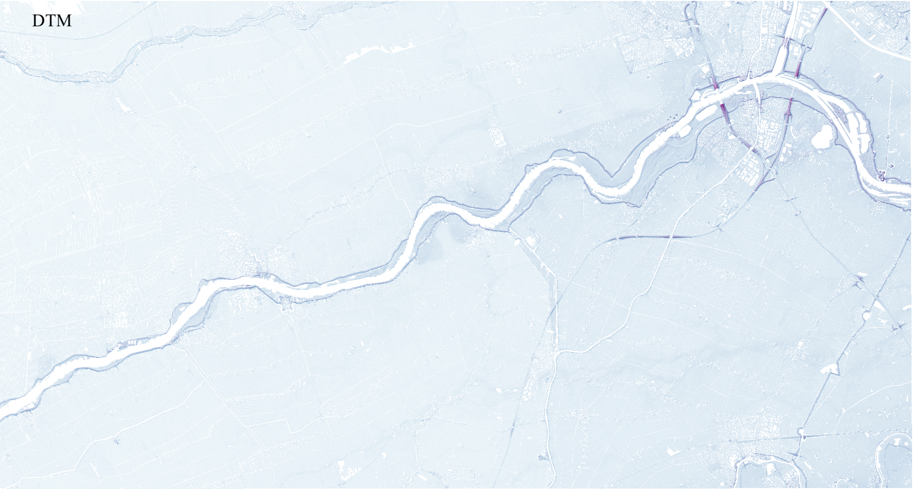
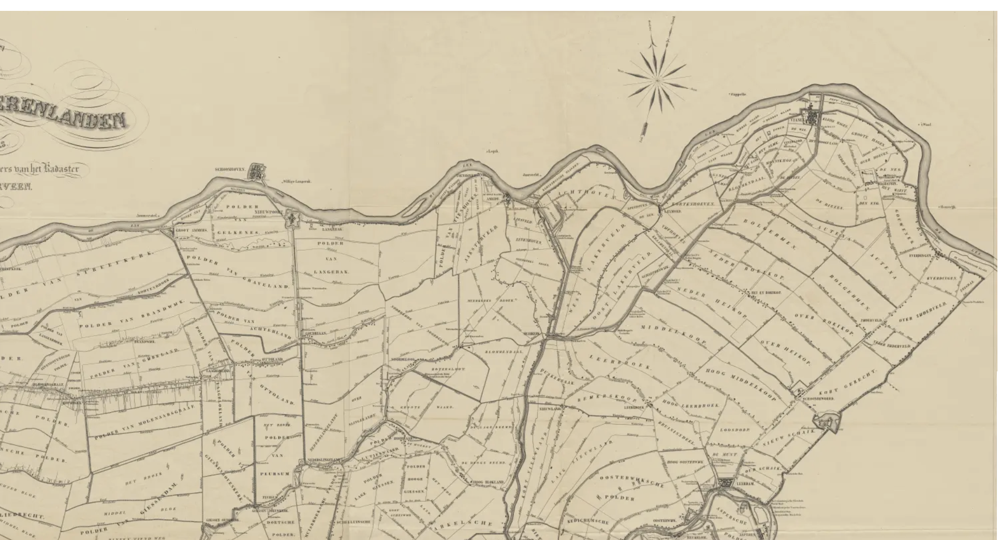

Write a short professional summary of the project here. Explain the purpose of the project, the research question, or the sustainability challenge addressed.
Introduce the project in more detail here. Describe the context, motivation, and overall goals of the work.
This section can explain:
Describe the GIS workflow and methods used.
Explain the major findings of the project. Discuss spatial patterns, environmental implications, or planning recommendations.




Discuss lessons learned, project limitations, and ideas for future improvements.
This section is useful for showing critical thinking, technical growth, and understanding of spatial analysis.